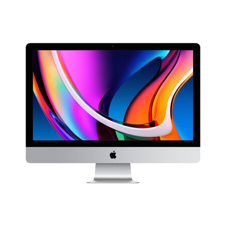
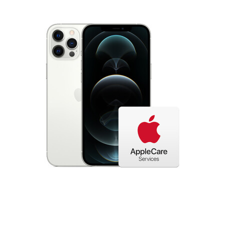
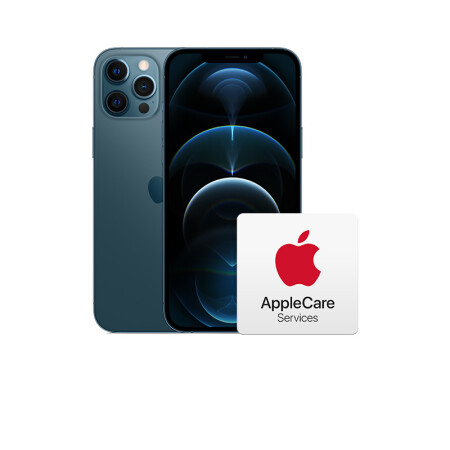

Apple iMac
As long as you dare to create ideas, just do it on iMac. It is beautifully designed, intuitive and easy to use, performance, and equipped with a more gorgeous 5K retina display, all aspects of the experience have been further improved. This versatile desktop computer is now faster and better to use.

Apple iPhone 12 mini
IPhone 12 upgrades its dimensions and speeds up. Ultra-fast 5G creates new iPhone speeds. A14 bionic chip, OLED full screen, and night mode that every camera can use.

Apple iPhone 12 Pro Max
iPhone 12 Pro Max uses a rear triple camera, 26mm F1.6 7P12 million pixel wide-angle, 65mm focal length telephoto, the entire system can provide five times optical zoom. Supports LiDAR lidar technology used on iPad Pro, as well as 10bit HDR video recording, Dolby Vision HDR, etc.